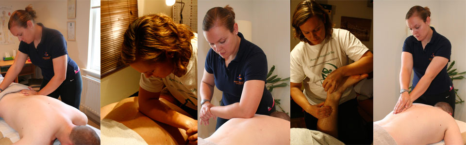
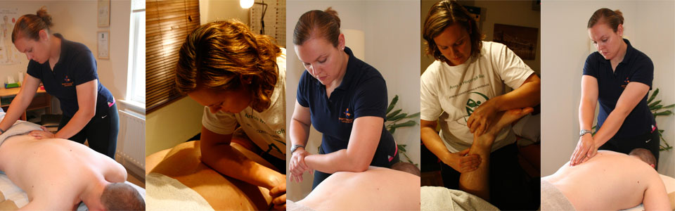

About Anna Hopcroft BSc MSMA ASCC

My journey as a sports professional started in 1999 when I trained as an athlete and represented England for hammer throwing. I quickly moved into coaching at clubs and University where I gained my degree in Sport and Exercise Science in 2005. I am a Level 3 Athletics Coach, specialising in throws, with over 15 years of experience coaching athletes. I have been heavily involved in athletics since moving to Sussex 5 years ago. Previously having worked as head of athletics at Hurstpierpoint college, Throws coach for Brighton college & Windlesham house schools. I now just do occasional athletics coaching at workshops and specialist masterclasses.
I first experienced Sports Massage Therapy after receiving treatment for a serious back injury whilst competing as an international athlete. The treatment I received led me to pursue a career in sports massage therapy to work alongside my professional coaching and teaching skills. My advanced training provided me with a superior working knowledge of body mechanics and allows me to treat clients more effectively. I previously worked in the running industry as a footwear specialist and manager for 4 years with both Brooks and Up & Running. I combine this experience in my assessment of clients and can offer gait analysis as an additional service. For a full list of services & treatments available please visit theServices & Treatments page.
I trained as a therapist through Premier and ITEC and I am a professional member of the Sports Massage Association (Level 4), UK Strength & Conditioning Association (Accredited), and British Weight Lifting. I offer a mobile & at home service around the Mid-Sussex area, providing advanced therapies at cost effective prices.
My specialism as a therapist is to treat sports injuries and back pain. My experiences of dealing with back pain since my injury have led me to discover various techniques to treat and manage back pain. I am also a big advocate of self-treatment and I teach my clients how to treat themselves at home using foam rollers and other sports rehabilitation equipment and offer thorough rehabilitation programs to aid recovery. I am a Kinesio® Taping Practitioner with the Kinesio® Taping Association and RockDoc level 2 certified Rock Taping Practitioner. I use therapeutic and sports tape to help speed up recovery from injury and deal with muscle & postural imbalances.I live locally at Hurstpierpoint College with my husband Adam, who teaches Physics at the college, and with our golden retriever George.
I am a Strength and Conditioning specialist trained through the British Weightlifting Association BWL and UK Strength & Conditioning Association UKSCA and have extensive experience in teaching weight lifting and Olympic lifting techniques. I run Sussex Strength an Olympic weightlifting and Strength & Conditioning gym based in Hurstpierpoint college. I previously worked at the University of Surrey providing strength & conditioning services to University teams and professional teams at Surrey Sports Park. I worked primarily with the rowing squad and the men's rugby team. I use these skills to provide my clients with comprehensive functional rehabilitation exercises and programs to get them back from injury faster and more effectively.As a member of the SMA and UKSCA, I am dedicated to further education and attend regular workshops and training days to remain up to date with current advanced techniques in my field.
My love of relaxation treatments has led me to develop routines in Hot Rocks Deep Tissue Massage and indulgent NYR Organic facials. I use my skills as a sports massage therapist to provide a deeply relaxing treatment that really gets rid of those knots & tight spots. My NYR Organic facials can also incorporate Natural Lift Facial Massage, which is like a non-surgical face lift! I love the NYR Organic Rose range and use their products for massage as well as facials. NYR Organic products can also be purchased directly from My NYR Organic web page or after treatments with no delivery charges.
To find out more about all of my Services and Treatments available Click Here
Anna's Qualifications & Experience
- Kinesiotaping® Practitioner & RockDoc® Certified Taping Practitioner
- Level 4 Sports Massage Therapist/Soft Tissue Therapist
- OMT Medical Accupuncturist
- MSMA Member Sports Massage Association
- BSc (hons) Sport & Exercise Science
- UK Athletics Level 3 Performance Coach
- Lewes Athletics Club Throws Coach
- UK Athletics Tutor- LiRF, Coaching Assistant, Elevating Athletics
- UKSCA Accredited Strength & Conditioning Coach
- British Weight Lifting BWL Level 2 Coach
- British Weight Lifting Tutor
- Lead Coach at Sussex Strength BWL licensed club
- First Aid Qualified Including Sports Taping & Strapping
- Pitch-side support & Therapist- HHRFC 2011/2012 season
- Supervisor & Therapist for Sports Massage Zone at Threshold Sports 100 Mile Bike Ride, Windsor
- Sports tour therapist- HHRFC Colts tour to Guernsey 2012, Hurstpierpoint College netball tour to Barbados 2010, Hurst college rugby tour to Biarritz 2013